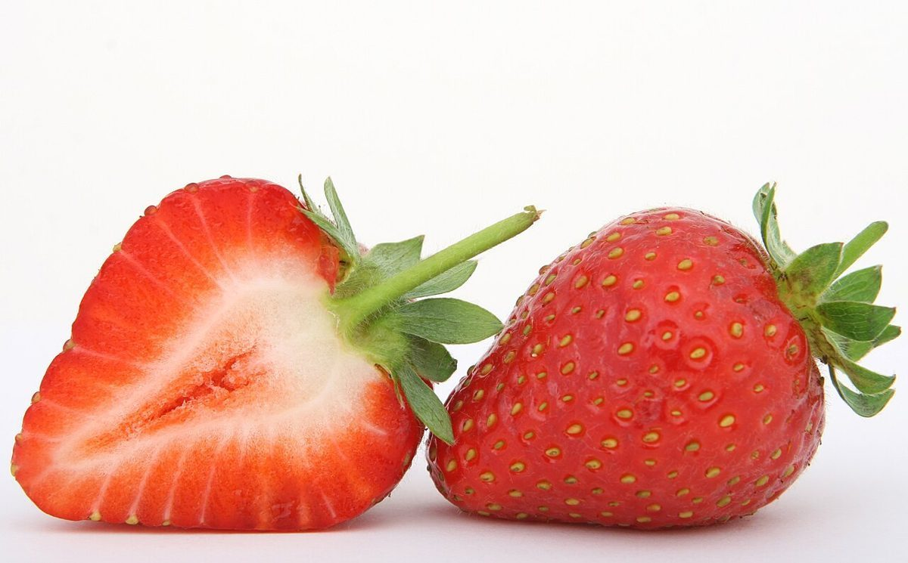

BOSJAM

ベーカリー / 山口県岩国市
パン屋ボスジャム
山口県岩国市由宇町にあるベーカリー「パン屋 ボスジャム」のご案内ページです。営業時間やメニューなど、詳しいことは準備中。まずはInstagramをのぞいてみてください。
制作側の連想
「ジャム」の瓶と、ギンガムの蓋から
店名の由来は分かりません。制作側は「ジャム」という言葉から、ギンガムチェックの布を蓋にかけて麻ひもで結んだ瓶詰めを連想しました。そこでこのサイトは、5つの瓶が並ぶ棚のように、ページごとに蓋の色を変えています。お店の理念・由来とは無関係な、制作側の連想です。お店でジャムを扱っているかどうかも分かりません。
棚をのぞく
4つの瓶を、ひとつずつ。

かごのパン(国外のイメージ) - 03メニュー準備中です

いちご(撮影地不明のイメージ) 
麦の穂(国外のイメージ)
瓶の中の写真は、お店のものではない国外・撮影地不明のフリー素材のイメージです。
パンのイメージ
焼き色いろいろ(イメージ)


国外・撮影地不明のフリー素材で、お店で扱うパンを示すものではありません。
ご案内
お店のこと(確認できたものだけ)
| 名称 | パン屋 ボスジャム |
|---|---|
| 業種 | ベーカリー |
| 所在地 | 〒740-1428 山口県岩国市由宇町中央１丁目２−９ |
| 電話 | なし |
| 営業時間 | 準備中 |
| 定休日 | 準備中 |
| ご予約 | 準備中 |
| 駐車場 | 準備中 |
| SNS | Instagram @panya_bos_jam |